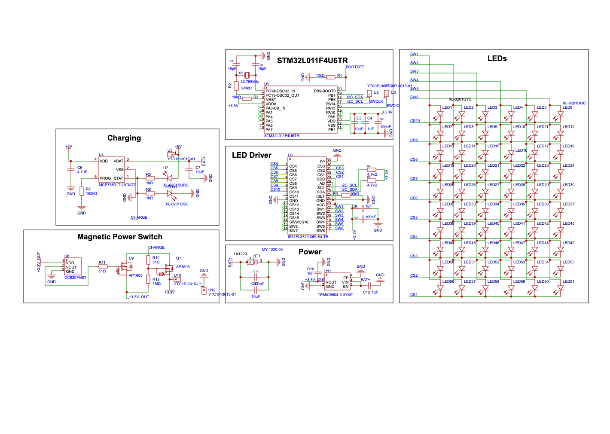

Description
Our project aimed to assess the effectiveness of Covid-19 cleaning protocols in our school. We utilized a mixed methods approach: First, we analysed 106 student desks under UV light after cleaning with Glo Germ powder, measuring touched areas and the effectiveness of the cleaning using digital grids. Second, we surveyed 26 teachers and 180 students to gather their opinions on Covid-19 and the cleaning procedures. Lastly, we observed student cleaning behaviors, finding that they cleaned the desk’s internal area more thoroughly than the perimeter. This comprehensive analysis provided insights into the cleaning protocols' effectiveness and areas needing improvement.
Outcome
First Place in the Junior Chemical Physical and Mathematical Sciences Category and a Special Award from The Irish Research Council at BTYSTE 2021
Attachments
V2.0 - Using STM32


V1.0 - Using purely discreet components \nThis iteration used eight shifting registers diasychained and driven by a quartz crystal oscillator circuit. Additionally it featured a latching circuit which would create the intial 'bit' in the first register that would then cycle through and provide the cycling LED.